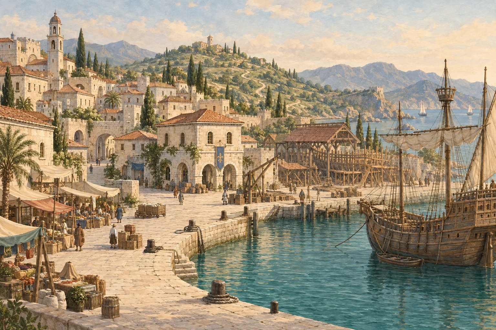

A LITTLE SEAFARING ADVENTURE
TRADE, EXPLORE & FIND YOUR OWN WAY
바람이 이끄는 곳으로.
교역으로 꿈을 키우고,
탐험으로 바다의 이야기를 찾으세요.
이 브라우저에 자동 저장
나만의 항로를 기록하는 작은 모험
보유 금화700 G
화물 적재0 / 24
항해의 시간1 일째
발견한 항구1 / 8
바다 위의 제비호
UNDER SAIL / 1550
바다가 부르는 곳으로
남서 · 225°
정박 중
바다를 눌러 방향을 정하세요.
클릭·터치한 방향으로 계속 항해 · 해안 앞 자동 정지 · 경로 지정은 해도에서
조타와 소리 안내
이 화면은 북쪽이 위입니다. 배 주변 바다를 누르면 그 방향으로 항해합니다. 가까운 항구 표지를 누르면 그 항구로 접근하며, 미확인 항구는 육지를 가로질러 갈 수 없습니다. 방향키로 동서남북 조타, 스페이스로 정지·계속도 가능합니다. 해도와 항해 화면은 같은 배 위치와 경로를 공유합니다.
출발할 때 서서히 가속하며 크게 선회하면 감속하고, 직선에서 다시 속도가 붙습니다. 속도 %는 현재 선박의 최고 속도를 기준으로 합니다. 경비는 이동 거리에 따라 계산되며 정지 버튼은 즉시 멈춥니다.
상단 '소리 켜짐/꺼짐'으로 은은한 물살·바람·갈매기·선박·입항 알림음을 조절합니다. '소리 대기'라면 화면을 터치해 주세요. 음량은 기기의 미디어 음량으로 조절하며, 다른 탭이나 입장 화면으로 이동하면 소리가 멈춥니다.
항해도
유럽 · 지중해 항해도PORTS c.1550 / MODERN COASTLINE
리스본 정박 중38° N · 9° W

A MOMENT ASHORE / 1550
리스본 항구
시설 표지를 눌러 항구를 둘러보세요.
지중해 항구의 창작 풍경